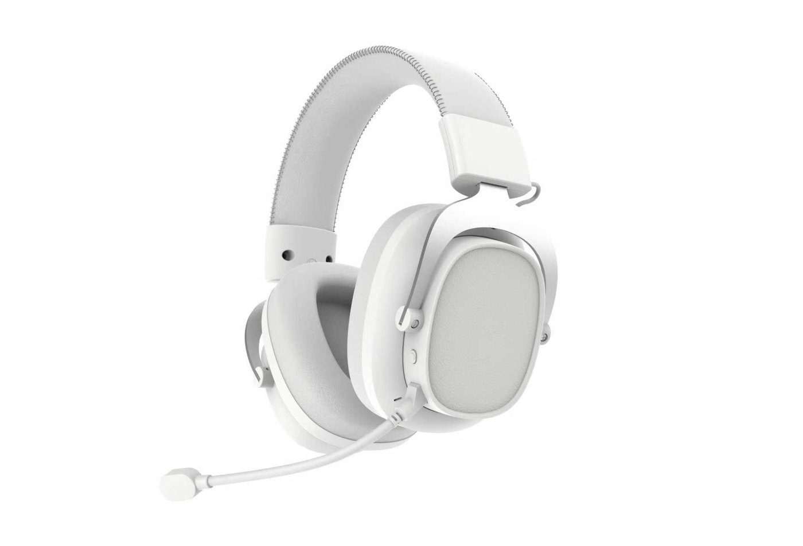
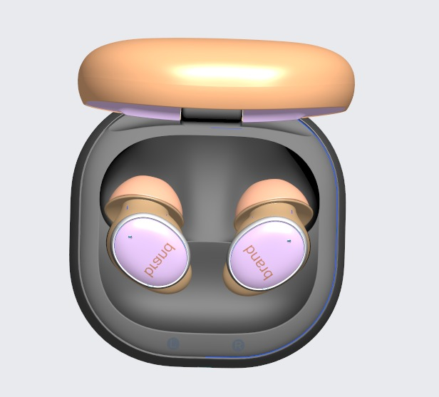
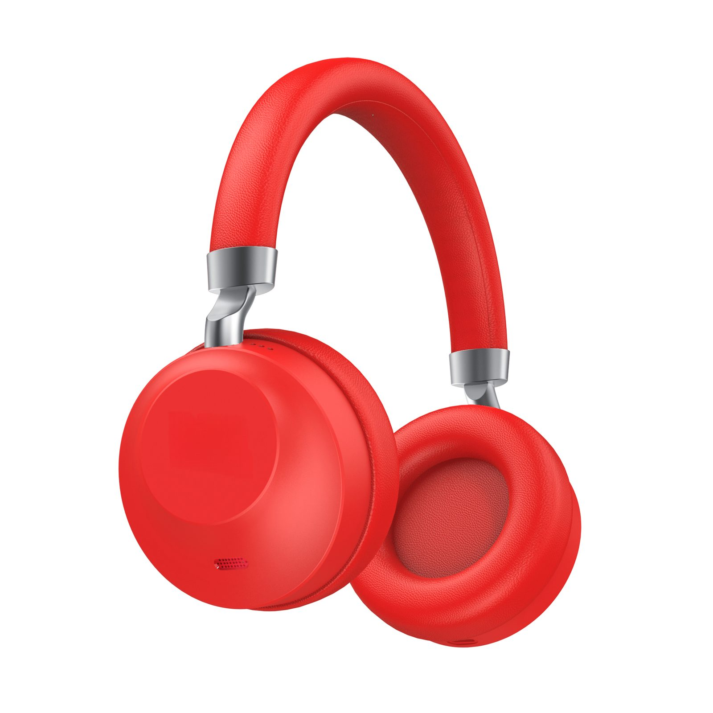

Gaming Headsets and Accessories
Compare wired RGB, 2.4G wireless and lead model directions for gaming accessory ranges, samples and private-label projects.

Private-label gaming headsets
Choose wired, 2.4GHz or tri-mode. Confirm your logo, colors, packaging and accessories on the selected sample.

Start with the connection
Choose the devices your customers will use before comparing logos or box designs. These are sample-selection routes, not claims that every headset works with every platform.
TALRIVO represents our own audio manufacturing business in China. Other audio categories are listed below for buyers planning a wider range.
Product categories
These cards connect to existing TALRIVO category and model pages. Final specifications, samples, customization options and availability should be confirmed for the selected product.
Compare wired RGB, 2.4G wireless and lead model directions for gaming accessory ranges, samples and private-label projects.

Review TWS appearance, charging case direction, supplied product images, sample questions and packaging needs by selected model.

Compare over-ear Bluetooth product directions for lifestyle audio ranges, model samples, logo area and retail packaging discussion.
Before artwork approval
A new logo and a new product function are different requests. Separate them in the brief so the sample and development work are clear.
Use the customization scope table to separate the work, and the blank sample review sheet to record your findings. You can also watch selected headset assembly stages; the video is not a test report or proof of a new function.
Project workflow
Share the destination country, buyer type, sales channel and product role before asking for a broad catalogue or quotation.
Explain whether the project needs gaming headsets, Bluetooth headphones or TWS earbuds, then name the preferred model direction.
Confirm appearance, connection, controls, comfort, microphone or audio use, accessories and product finish by category.
After model review, send quantity range, logo needs, packaging direction, sample timing and destination-market document questions.
Project evidence
G941 connects a dedicated product page, supplied color images, an official TALRIVO YouTube demonstration, sample questions and RFQ preparation without publishing unverified prices or performance data.
The model page provides supplied images, receiver detail, boom microphone, buyer questions and sample contact paths.
The video provides supporting product evidence for microphone noise-reduction direction and sample review.
After model selection, the customization page covers logo, color, packaging, manual language and accessory-set discussion.
Share the market, sales channel, model interest, quantity range, branding needs and sample timing.
Product routes
Product FAQ
Yes. Buyers can shortlist gaming headsets and related audio products, review samples and then discuss logo, color, packaging, manual language and accessory direction for the selected product version.
Gaming headsets, Bluetooth headphones, TWS earbuds and Type-C earphones can be reviewed depending on the brand plan and selected model.
There is no single MOQ or lead time for every project. Ask about the selected model, logo or color changes, packaging, accessories and any development work. Confirm sample timing and the production schedule separately before committing to a launch date.
Include the destination market, sales channel, product category, model interest, quantity range, target product role, sample timing, branding needs, packaging direction and document questions.
No. You can discuss your logo, colors and packaging idea early. Final artwork approval should follow confirmation of the model and sample version, because the branding area, package dimensions, accessories and manual content depend on that version.
No. Logo area, color direction, accessories, packaging and available product information should be confirmed for each selected model and project.
Tell us your target devices, market and what you want to change. You do not need finished artwork or a complete purchasing brief to start the conversation.